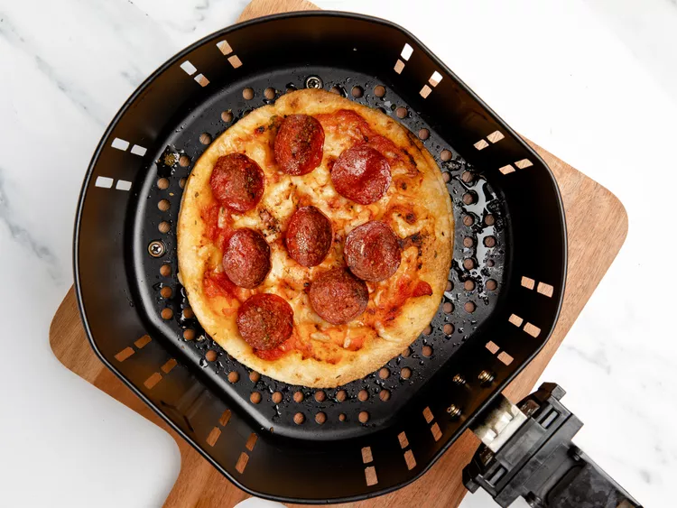

Air Fryer Pizza Recipe

Desciption
This a quick and wasy pizza recipe inspired and originating from Tiktok. If your
are ever craving a pizza in the middle of the night this is yout best friend.
Ingredients
- 2 flour tortilla (6 inch)
- 1 tablespoon extra-virgin olive oil
- 2 tablespoons pizza sauce, divided
- ½ cup shredded mozzarella cheese, divided
- ¼ cup sliced pepperoni
- ⅛ teaspoon dried oregano
Steps
- Preheat airfryer to 400°F
- Brush one side of each tortilla lightly with olive oil. Be sure to get all the way to the edges.
- Spread 1 tablespoon sauce over the middle of one tortilla, then top with ¼ cup cheese. Cover with
second tortilla and repeat with the remaining sauce and cheese. Top with pepperoni and oregano.
- Lightly brush the air fryer basket with any remaining olive oil and transfer the pizza to the air
fryer basket. Cook 6 minutes.
- Carefully remove the pizza with a spatula and let cool slightly before slicing.
Back